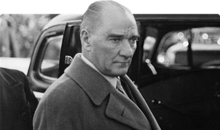

- The Godfather
- Fight Club
- The Lord Of The Rings

- Supernatural
- Breking Bad
- The Sopranos
- Gece Yarısı Kütüphanesi
- Senin Cahilligin Benim Yaşamımı Etkiliyor
- Yarının Adamı Mustafa Kemal'i Anlamak 
Türkiye Cumhuriyeti'nin kurucusu ve ilk cumhurbaşkanıdır. Ayrıca, Türk Kurtuluş Savaşı'nın başkomutanıdır.